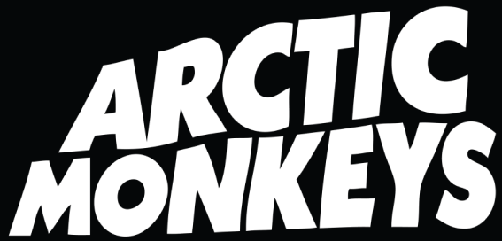

HOME
BIOGRAPHY
FIRST ALBUM
CONTACT



We started Arctic Monkeys in 2002 as a group of friends from Sheffield, playing in garages and doing a few local gigs. It was just Alex (vocals, guitar), Jamie (guitar), Andy (bass), and Matt (drums), having fun making music. Things really took off when people began sharing our recordings online, especially on MySpace.


By the time we released “I Bet You Look Good on the Dancefloor” in 2005, it went straight to number one in the UK. Our debut album, "Whatever People Say I Am, That's What I'm Not" (2006), became the fastest-selling debut in UK history. It all happened naturally—through gigs and word-of-mouth, without a big campaign, just music that connected with people.

We weren’t thinking about making a classic or changing music; we were just documenting the nights out , the streets we walked, and the characters we met. It’s fast, loud, and raw, just like the gigs we were playing in those early days. A lot of the songs were written about the chaos of being out late , getting into scrapes, and all the stuff that seemed important back then. It’s mad to think it resonated with so many people, but it was honest, and I guess people heard that. We had no idea it’d take off like it did. It’s all there, a snapshot of who we were at the time, before all the madness kicked off.